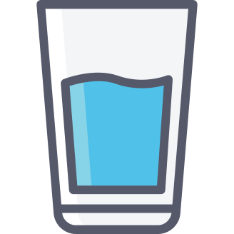

Aujourd'hui j'ai commencer à me mettre a learn les bases du JS (Javascript)
faut dire que j'avais déjà eu des notions en 2016-2017, mais bon, on oublie vite avec le temps !
j'ai pas mal appris de choses en espace de 20 mn de vidéo.
comme par exemple :
le fonctionnement avec les tableaux, les callback, les function fléché.
et je vous en passe du plus basic.
par exemple avec le fonctionnement des tableaux,
y a pas mal de méthode qu'un tableau peut prendre comme genre :
tableau.push(value) = qui sert à ajouter une valeur à notre tableau a la suite de la dernière.
tableau.pop() = qui sert à retirer la dernière valeur de notre tableau.
tableau[tableau.length -1] = qui nous retourne la dernière valeur de notre tableau.
Enfin bref, y a un tas de choses fun a savoir, mais vous avez compris le concept.
maintenant si vous voulez une astuce de génie pour vous aider à apprendre un nouveau language de programmation,
retenez ceci, vous devrez toujours commencer par apprendre c'est fondamentaux :
Les Variables + expressions : Apprendre à quoi sert une variable, puis comment les utilisez.
Les Functions : Apprendre à quoi sert une function/méthode, un (argument, parametre) , puis comment les utilisez.
Structure de contrôle : Apprendre à quoi sert une condition, puis comment les utilisez.
Les Tableaux : Apprendre à quoi sert un tableau, puis comment les utilisez.
LA POO : Apprendre à quoi sert d'utiliser la programmation orienté objet, puis comment les utilisez.
Une fois avoir aquis c'est 5 fondamentaux vous serez en mesure de pouvoir commencer a créer vos propre contenue.
et découvrir un nouveau monde fantastique !
Bref, buvez de l'eau y'a pas mieux. à la prochaine pour un autre blog time. 
Faut que je vous avoue que je suis retomber sous le charme de la série The Walking Dead,
a partir de la saison 9,
j'ai comme une impression que la série reprend un nouveau sens !
avec l'arrivée "des chuchoteur" ça ajoute un suspense et un nouveau sens à la série.
Bref, buvez de l'eau y'a pas mieux. à la prochaine pour un autre blog time.
Hey, voici le début de ce blog, avant tout faut savoir que j'ai pas mal galéré a mettre en place un footer stable qui reste positionner en bas de la page.
Heureusement pour moi que j'ai trouver un bon tutorial que je vous recommande si besoin qui pour le coup ma énormement aider et vous aidera surement.
Bref, buvez de l'eau y'a pas mieux. à la prochaine pour un autre blog time.